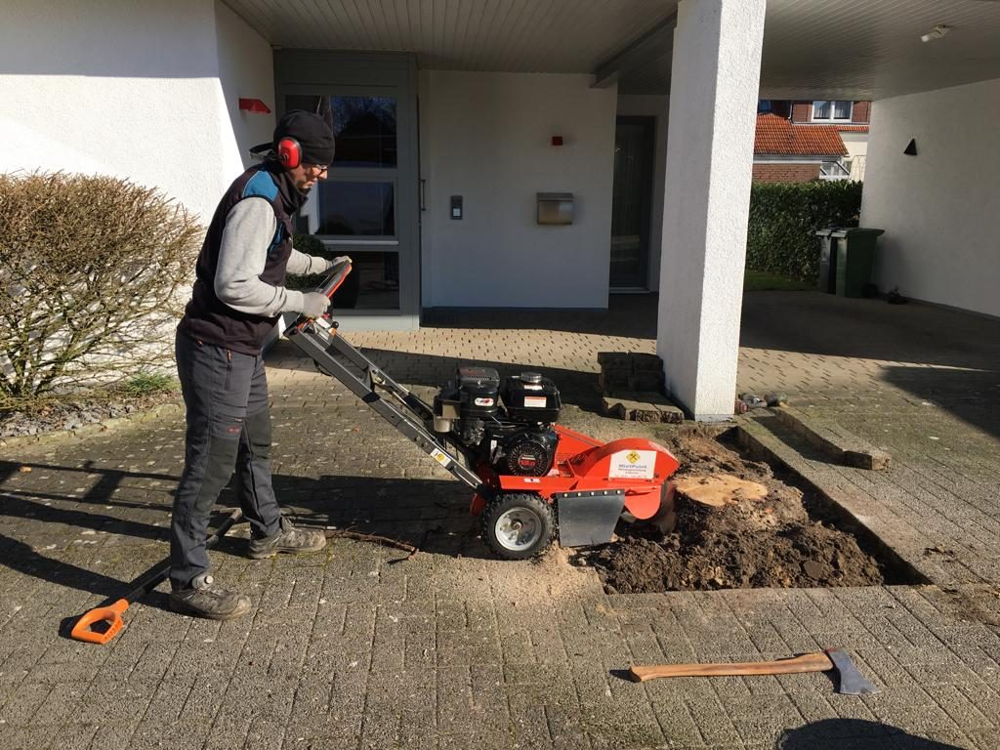

Montăm garduri, tundem gazon și gard viu și scoatem cioatele rămase după tăierea copacilor. Venim cu utilaje proprii, lucrăm curat și strângem totul după noi.
Montăm garduri la cheie, de la măsurători și trasare până la ultimul panou fixat. Lucrăm cu panouri bordurate, plasă zincată, șipcă din lemn, gard tip jaluzea și profile metalice, adaptate la terenul și stilul proprietății.
Un gard bine montat înseamnă stâlpi drepți, distanțe egale și fundație corectă. De asta depinde dacă rezistă 3 ani sau 20.
Ne ocupăm de tunsul gazonului fie ca lucrare unică, fie ca abonament sezonier, cu vizite la 1–2 săptămâni. Reglăm înălțimea de tăiere în funcție de tipul de gazon și de sezon, ca iarba să rămână deasă și verde, nu arsă de soare.
Recomandăm ritm regulat: gazonul tuns des devine mai des și sufocă buruienile de la sine.
Scoatem cioate și rădăcini rămase după tăierea copacilor, ca terenul să poată fi folosit mai departe — pentru gazon, pavaj, fundație sau plantări noi. Lucrăm atât manual, în spații înguste sau lângă utilități, cât și mecanizat, cu freză de cioate, pentru rădăcini mari.
O cioată lăsată în pământ atrage insecte, ciuperci și dă lăstari an de an. Scoasă corect, problema se închide definitiv.
Tundem și modelăm gard viu de orice tip — tuia, buxus, ligustru, leylandi, lemn câinesc — cu tăieri care păstrează forma și stimulează îndesirea plantei. Corectăm și garduri vii crescute haotic sau golite la bază.
Momentul potrivit contează: tuia și buxusul se tund altfel primăvara față de toamnă, iar noi ajustăm tăierea în funcție de sezon.
Trimite câteva poze și dimensiunile aproximative și îți spunem cât durează și cât costă. Deplasarea pentru măsurători se face în aceeași zonă, fără costuri suplimentare.